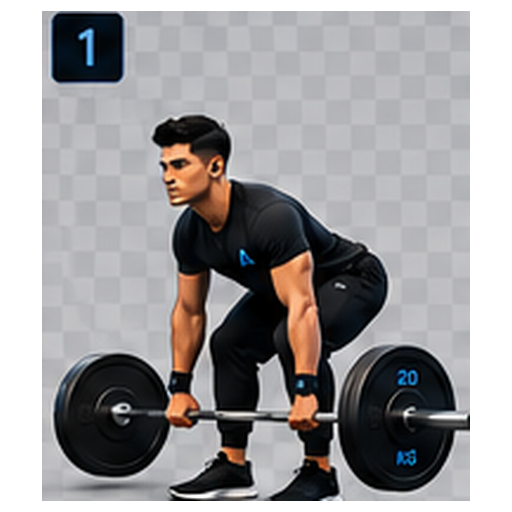

A
ATLAS
ENTRENADOR VIRTUAL
TÉCNICA GUIADA
Peso muerto
Observa cada fase, controla la velocidad y practica el patrón antes de cargar peso.

1/16
FASE ACTUAL
Posición inicial
Barra sobre el centro del pie y abdomen activo.
- Empuja el suelo con los pies.
- Mantén la barra cerca del cuerpo.
- Extiende cadera y rodillas juntas.
- Controla el descenso.